СП 310.1325800.2017 «Бассейны для плавания. Правила проектирования»
О документе: разработчики, утверждение, регистрация, ключевые слова
1 ИСПОЛНИТЕЛИ - Общество с ограниченной ответственностью «Научноисследовательский и проектный институт учебных, общественных и жилых зданий» (ООО «Институт общественных зданий»); Акционерное общество «Центральный научно-исследовательский и проектно-экспериментальный институт промышленных зданий и сооружений - ЦНИИПромзданий» (АО «ЦНИИПромзданий»)
2 ВНЕСЕН Техническим комитетом по стандартизации ТК 465 «Строительство»
3 ПОДГОТОВЛЕН к утверждению Департаментом градостроительной деятельности и архитектуры Министерства строительства и жилищнокоммунального хозяйства Российской Федерации (Минстрой России)
4 УТВЕРЖДЕН И ВВЕДЕН В ДЕЙСТВИЕ приказом Министерства строительства и жилищно-коммунального хозяйства Российской Федерации от 26 декабря 2017 г. № 1716/пр и введен в действие с 27 июня 2018 г.
5 ЗАРЕГИСТРИРОВАН Федеральным агентством по техническому регулированию и метрологии (Росстандарт)
6 ВВЕДЕН ВПЕРВЫЕ
В случае пересмотра (замены) или отмены настоящего свода правил соответствующее уведомление будет опубликовано в установленном порядке. Соответствующая информация, уведомление и тексты размещаются также в информационной системе общего пользования - на официальном сайте разработчика (Минстрой России) в сети Интернет
© Минстрой России, 2017
Настоящий нормативный документ не может быть полностью или частично воспроизведен, тиражирован и распространен в качестве официального издания на территории Российской Федерации без разрешения Минстроя России
Дата введения 2018-06-27
УДК
ОКС 91.040.10
Ключевые слова: здания, сооружения, бассейны физкультурно-оздоровительные, бассейны для детей дошкольного возраста, учебные бассейны, оздоровительные бассейны, архитектурно-строительные решения, естественное и искусственное освещение, акустика, отопление, вентиляция, водоснабжение, канализация.
Генеральный директор АО «ЦНИИПромзданий», Заслуженный строитель РФ, д.т.н., проф., В.В. Гранев
\_\_\_\_\_\_\_\_\_\_\_\_\_\_\_\_\_\_\_ \_\_\_\_\_\_\_\_\_\_\_\_\_\_\_\_\_\_\_ \_\_\_\_\_\_\_\_\_\_\_\_\_\_\_\_\_\_\_
должность
личная подпись
инициалы, фамилия
СОИСПОЛНИТЕЛИ
ООО «Институт общественных зданий»
наименование организации
\_\_\_\_\_\_\_\_\_\_\_\_\_\_\_\_\_\_\_ \_\_\_\_\_\_\_\_\_\_\_\_\_\_\_\_\_\_\_ \_\_\_\_\_\_\_\_\_\_\_\_\_\_\_\_\_\_\_
должность
личная подпись
инициалы, фамилия
\_\_\_\_\_\_\_\_\_\_\_\_\_\_\_\_\_\_\_ \_\_\_\_\_\_\_\_\_\_\_\_\_\_\_\_\_\_\_ \_\_\_\_\_\_\_\_\_\_\_\_\_\_\_\_\_\_\_
должность
личная подпись
инициалы, фамилия
Генеральный директор, Почетный архитектор России, Канд. арх. Д.А. Рождественский
Ответственный исполнитель, Генеральный директор, Почетный архитектор России, Канд. арх. Д.А. Рождественский
Введение
Настоящий свод правил разработан с учетом возросших требований к условиям обучения плаванию детей дошкольного и школьного возраста, оздоровительной деятельности среди населения, а также - с учетом изменений правил и регламентов соревнований по водным видам спорта, требований к параметрам и оборудованию плавательных бассейнов, предназначенных для проведения спортивных мероприятий.
Свод правил обеспечивает соблюдение требований Федеральных законов от 30 декабря 2009 г. № 384-Ф3 «Технический регламент о безопасности зданий и сооружений», от 22 ноября 2009 г. № 261-ФЗ «Об энергосбережении, повышении энергетической эффективности и о внесении изменений в отдельные законодательные акты Российской Федерации», от 22 июля 2008 г. № 123-Ф3 «Технический регламент о требованиях пожарной безопасности».
Свод правил разработан авторским коллективом: ООО «Институт общественных зданий» (руководитель работы - канд. архитектуры Д.А.Рождественский , ответственные исполнители - канд. архитектуры А.М.Гарнец , ст. науч. сотр. Л.В.Сигачева ); ОФСОО «Российская ассоциация спортивных сооружений» (д-р психол. наук, В.Б. Мяконьков ); ООО «Институт спортивных сооружений» ( А.В. Трухан ).
БАССЕЙНЫ ДЛЯ ПЛАВАНИЯ Правила проектирования
Swimming pools. Design rules
1Область применения
2Нормативные ссылки
В настоящем своде правил использованы нормативные ссылки на следующие документы:
ГОСТ Р 53491.1-2009 Бассейны. Подготовка воды. Часть 1. Общие требования
ГОСТ Р 53491.2-2012 Бассейны. Подготовка воды. Часть 2. Требования безопасности
СП 1.13130.2009 Системы противопожарной эвакуации. Эвакуационные пути и выходы (с изменением № 1)
СП 3.13130.2009 Системы противопожарной защиты. Система оповещения и управления эвакуацией людей при пожаре. Требования пожарной безопасности
СП 5.13130.2009 Системы противопожарной защиты. Установки пожарной сигнализации и пожаротушения автоматические. Нормы и правила проектирования (с изменением № 1)
СП 28.13330.2017 «СНиП 2.03.11-85 Защита строительных конструкций от коррозии»
СП 30.13330.2016 «СНиП 2.04.01-85* Внутренний водопровод и канализация зданий»
СП 42.13330.2016 «СНиП 2.07.01-89* Градостроительство. Планировка и застройка городских и сельских поселений»
СП 51.13330.2011 «СНиП 23-03-2003 Защита от шума» (с изменением № 1)
СП 52.13330.2016 «СНиП 23-05-95* Естественное и искусственное освещение»
СП 59.13330.2016 «СНиП 35-01-2001 Доступность зданий и сооружений для маломобильных групп населения»
СП 60.13330.2016 «СНиП 41-01-2003 Отопление, вентиляция и кондиционирование»
СП 64.13330.2017 «СНиП II-25-80 Деревянные конструкции»
СП 113.13330.2016 «СНиП 21-02-99* Стоянки автомобилей»
СП 118.13330.2012 «СНиП 31-06-2009* Общественные здания и сооружения» (с изменениями № 1, № 2)
СП 132.13330.2011 Обеспечение антитеррористической защищенности зданий и сооружений. Общие требования проектирования
СП 133.13330.2012 Сети проводного радиовещания в зданиях и сооружениях (с изменением № 1)
СП 136.13330.2012 Здания и сооружения. Общие положения проектирования с учетом доступности для маломобильных групп населения (с изменением № 1)
СанПиН 2.1.4.1074-01 Питьевая вода. Гигиенические требования к качеству воды централизованных систем питьевого водоснабжения. Контроль качества. Гигиенические требования к обеспечению безопасности систем горячего водоснабжения
СанПиН 2.2.1/2.1.1.1076-01 Гигиенические требования к инсоляции и солнцезащите помещений жилых и общественных зданий и территорий
СанПиН 2.2.1/2.1.1.1278-03 Гигиенические требования к естественному, искусственному и совмещенному освещению жилых и общественных зданий
СанПиН 2.1.2.1188-03 Плавательные бассейны. Гигиенические требования к устройству, эксплуатации и качеству воды. Контроль качества
Примечание - При пользовании настоящим сводом правил целесообразно проверить действие ссылочных документов в информационной системе общего пользования - на официальном сайте федерального органа исполнительной власти в сфере стандартизации в сети Интернет или по ежегодному информационному указателю «Национальные стандарты», который опубликован по состоянию на 1 января текущего года, и по выпускам ежемесячного информационного указателя «Национальные стандарты» за текущий год. Если заменен ссылочный документ, на который дана недатированная ссылка, то рекомендуется использовать действующую версию этого документа с учетом всех внесенных в данную версию изменений. Если заменен ссылочный документ, на который дана датированная ссылка, то рекомендуется использовать версию этого документа с указанным выше годом утверждения (принятия). Если после утверждения настоящего свода правил в ссылочный документ, на который дана датированная ссылка, внесено изменение, затрагивающее положение на которое дана ссылка, то это положение рекомендуется применять без учета данного изменения. Если ссылочный документ отменен без замены, то положение, в котором дана ссылка на него, рекомендуется применять в части, не затрагивающей эту ссылку. Сведения о действии сводов правил целесообразно проверить в Федеральном информационном фонде стандартов.
3Термины и определения
В настоящем своде правил использованы следующие термины с соответствующими определениями:
- 3.1VVIP-зона
- Полностью автономная территория (пространство), имеющая ограниченный доступ, отдельное обслуживание и эксклюзивный набор услуг, выделенную зону зрительских мест в наиболее комфортной части трибуны, обеспечивающей наилучший обзор спортивного мероприятия, предназначенная для специальных гостей, с местами и дополнительными помещениями повышенной комфортности и безопасности.
- 3.2VIP-зона
- Выделенная зона зрительских мест и дополнительных помещений повышенной комфортности и безопасности с дополнительным набором услуг.
- 3.3всероссийский реестр объектов спорта
- Реестр, формируемый в целях систематизации данных о количестве, назначении и состоянии объектов спорта, находящихся на территории Российской Федерации и используемых для проведения физкультурных мероприятий и спортивных мероприятий, включенных в Единый календарный план межрегиональных, всероссийских и международных физкультурных мероприятий и спортивных мероприятий, календарные планы физкультурных мероприятий и спортивных мероприятий субъектов Российской Федерации.
- 3.4вспомогательная зона
- Набор помещений, обеспечивающих спортивному сооружению сопутствующие функции технического обслуживания и сервисов для различных клиентских групп при проведении спортивных мероприятий.
- 3.5зона зрителей
- Пространство в непосредственной близости от соревновательной зоны, предназначенное для зрителей спортивных мероприятий, проводимых на спортивном сооружении.
- 3.6зона организаторов
- Набор помещений, предназначенных для размещения и работы организаторов спортивного мероприятия.
- 3.7зона спортивная (спортивная зона)
- Основное пространство (территория) спортивного сооружения, на котором непосредственно проводится спортивное мероприятие, включающее зону безопасности, отделяющую спортивную зону от зрителей или конструктивных элементов, техническую зону с местами размещения участников и судей, а также оборудования, необходимого для проведения спортивного мероприятия.
- 3.8категория спортивного сооружения
- Соответствие спортивного сооружения требованиям уровня проводимых спортивных мероприятий (А международные и всероссийские спортивные мероприятия; В -межрегиональные спортивные мероприятия; С -иные спортивные мероприятия).
- 3.9клиентские группы
- Разделенные на категории (сегменты) гости, организаторы, участники, зрители, судьи, обслуживающий и технический персонал, а также другие группы находящиеся на спортивном сооружении в период проведения спортивного мероприятия.
- 3.10объект спорта
- Здание, сооружение или комплекс предназначенный для проведения физкультурных и/или спортивных мероприятий.
- 3.11официальные физкультурные мероприятия и спортивные мероприятия
- Физкультурные мероприятия и спортивные мероприятия, включенные в Единый календарный план межрегиональных, всероссийских и международных физкультурных мероприятий и спортивных мероприятий, календарные планы физкультурных мероприятий и спортивных мероприятий субъектов Российской Федерации, муниципальных образований.
- 3.12система видеоизображения
- Табло, куб, другие устройства, отображающие видеоинформацию о спортивном мероприятии.
- 3.13система хронометража
- Комплект электронной аппаратуры, обеспечивающий точный отсчет времени и фиксацию результатов участников соревнований.
- 3.14спортивное оборудование
- Устройства, приспособления, снаряды, размещение которых на спортивном сооружении предусмотрено правилами соревнований по видам спорта.
- 3.15спортивное сооружение
- Инженерно-строительный объект, созданный для проведения физкультурных мероприятий и (или) спортивных мероприятий и имеющий пространственно-территориальные границы.
- 3.16спортивное соревнование
- Состязание (матч) среди спортсменов или команд спортсменов по различным видам спорта (спортивным дисциплинам) для выявления лучшего участника состязания (матча), проводимое по утвержденному его организатором положению (регламенту).
- 3.17спортивные мероприятия
- Спортивные соревнования, а также тренировочные мероприятия, включающие в себя теоретическую и организационную части, и другие мероприятия по подготовке к спортивным соревнованиям с участием спортсменов.
- 3.18физкультурные мероприятия
- Организованные занятия граждан физической культурой.
- 3.19функциональная зона
- Помещение (пространство), в границах спортивного сооружения, с установленным функциональным назначением и режимом использования.
4Общие положения
Рисунок 4.1 Классификация бассейнов для плавания
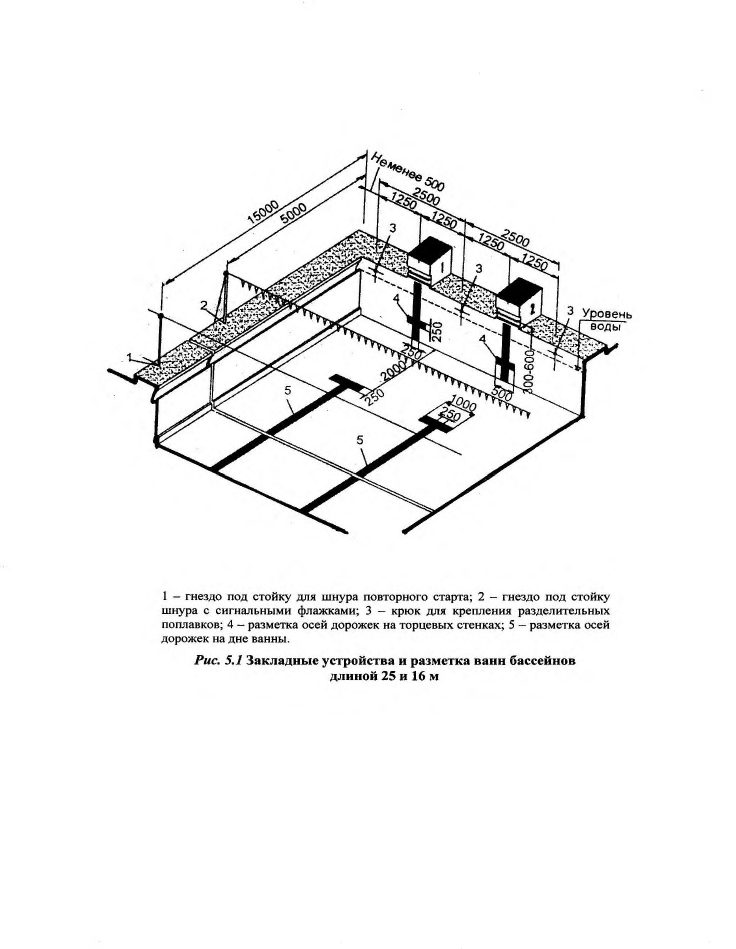
Учебные бассейны -для использования общеобразовательными организациями на уроках физкультуры, детскими санаториями, лагерями, в местах массового отдыха детей и взрослых.
Оздоровительные бассейны - для размещения и использования в местах проживания и массового отдыха граждан, в составе оздоровительных центров предприятий, в воинских частях, фитнес-клубах, санаториях, домах отдыха и т.п.
5Параметры и оборудование ванн бассейнов
Физкультурно-оздоровительные бассейны
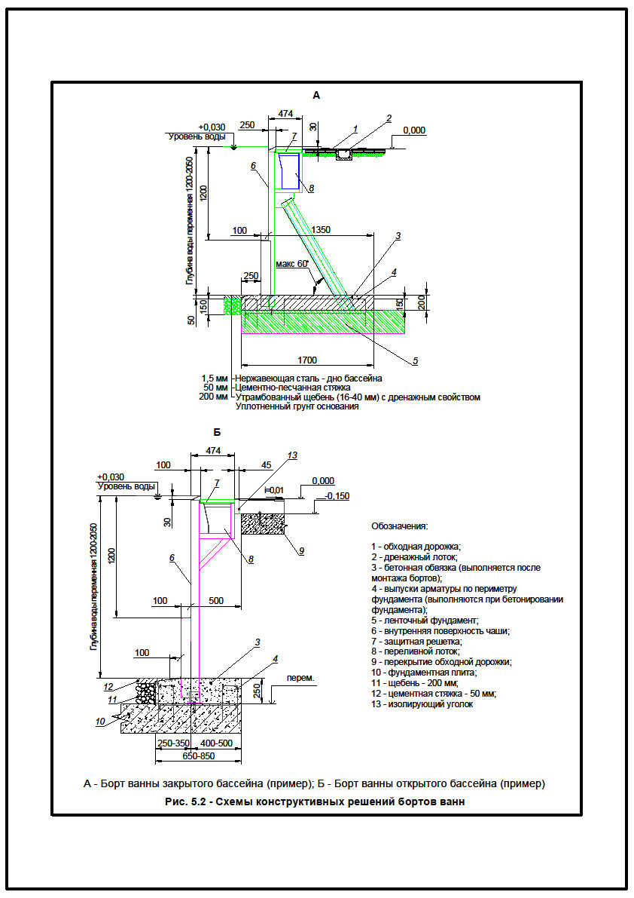
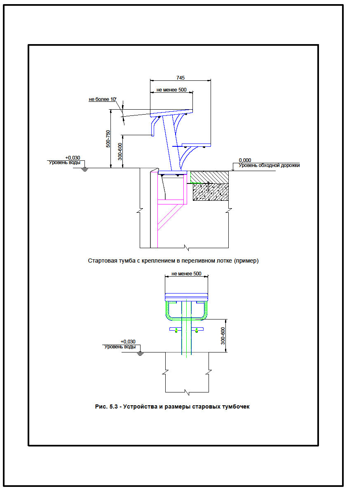
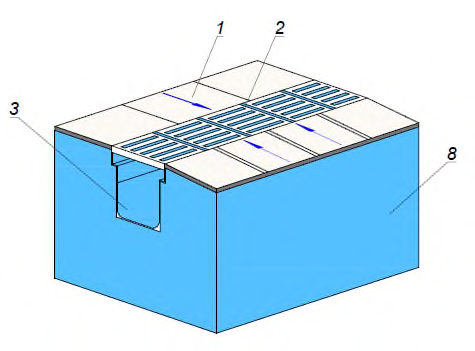
Б
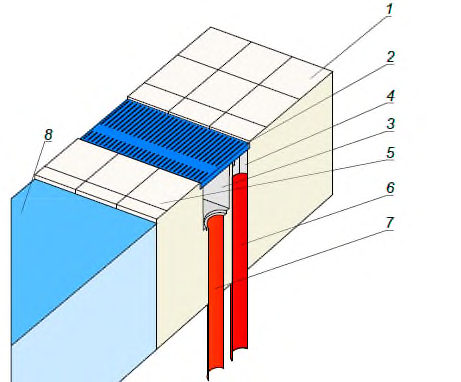
- А - Схема переливного желоба с объединенным лотком;
- Б - Схема переливного желоба с раздельным сбором воды;
1 - обходная дорожка; 2 - декоративная решетка; 3 - лоток для сбора воды; 4 - лоток для сбора воды с ответом в канализацию; 5 - пространство между желобом и отвесом ванны; 6 - отвод воды в канализацию из отдельного лотка; 7 - отвод воды в систему рециркуляции; 8 - уровень воды
Рисунок 5.3, лист 1 - Оборудование зала ванны. Схема переливного желоба
В
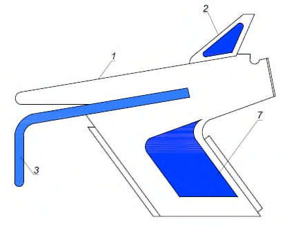
- А - Общая схема стартовой тумбы;
- Б - Схема стартовой тумбы с креплением на стартовый блок;
- В - Схема стартовой тумбы с креплением для ванны переливного типа;
1 - площадка стартовой тумбы; 2 - передвижной упор для толчковой ноги; 3 - поручень для старта с воды; 4 - переливной желоб; 5 - крепление тумбы; 6 - уровень воды; 7 - основание тумбы; 8 - поручень для хвата руками (может отсутствовать)
Рисунок 5.3, лист 2 - Оборудование зала ванны. Стартовая тумба
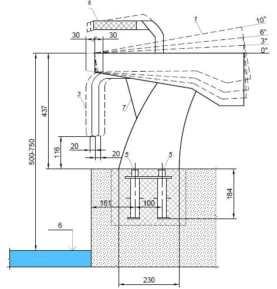
Вдоль стен бассейна по периметру обходной дорожки рекомендуется устраивать сплошной поручень на высоте 0,9 м от пола. На рисунке 5.5 приведена схема планировки зала бассейна, используемого маломобильными гражданами. На рисунке 5.6 приведена схема устройства тактильных полос на обходной дорожке ванн.
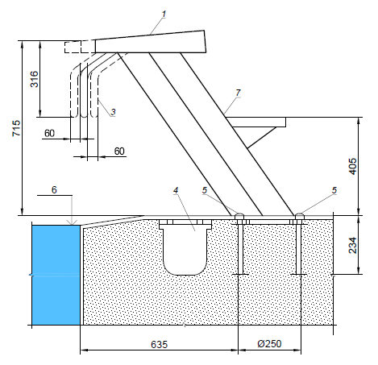
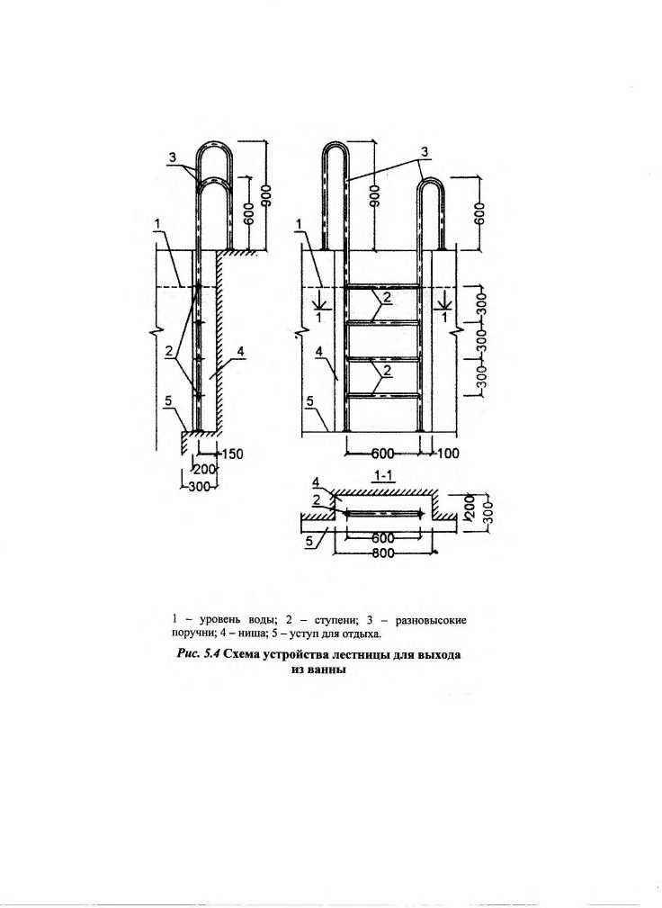
Спортивные бассейны
Для проведения тренировочных занятий допускается применение спортивных ванн других размеров при условии указания данных требований в задании на проектирование.
Параметры соревновательных, тренировочных и вспомогательных зон, установленные правилами (регламентами) спортивных федераций по водным видам спорта, -обязательны как технологические требования к проектированию спортивных сооружений.
Классификация спортивных бассейнов, в зависимости от функционального назначения ванн, приведена на рисунке 4.1.
Бассейны для спортивного плавания
Расчет ширины принимается от ограждающей конструкции до края закладных элементов (переливной желоб, крепление трумб и пр.) в чистоте.
Параметры ванн для спортивного плавания приведены на рисунках 5.7, 5.8, 5.9.
А
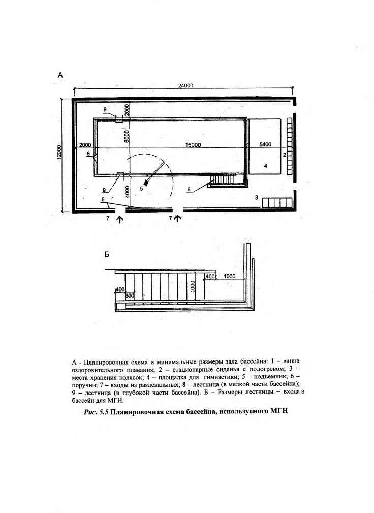
Б
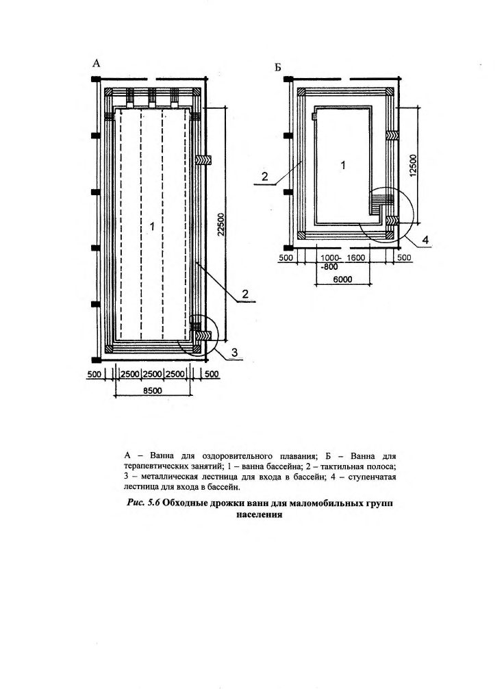
| Параметры разметки дорожек, мм | Параметры разметки дорожек, мм | Параметры разметки дорожек, мм |
|---|---|---|
| Ширина разметки, поперечных линий | А | 250-500 |
| Длина поперечной линии цели | Б | 500 |
| Глубина от центра линии цели | В | 300 |
| Длина поперечной линии окончания | Г | 1000 |
| Расстояние между осями дорожек | Д | 2500 |
| Расстояние между разметкой и стеной | Е | 2000 |
| Контактная панель | Ж | 2400х900х10 |
| Расстояние между центом поперечной линии и сеткой | И | 15000 |
- разделительные дорожки;
Б
1 - места установки стоек сигнала поворота (закладные); 2 - места установки стоек для шнура фальстарта (закладные); 3 - уровень воды
Рисунок 5.7 Схема и разметка для соревнований ванны 50 м плавательного бассейна
A
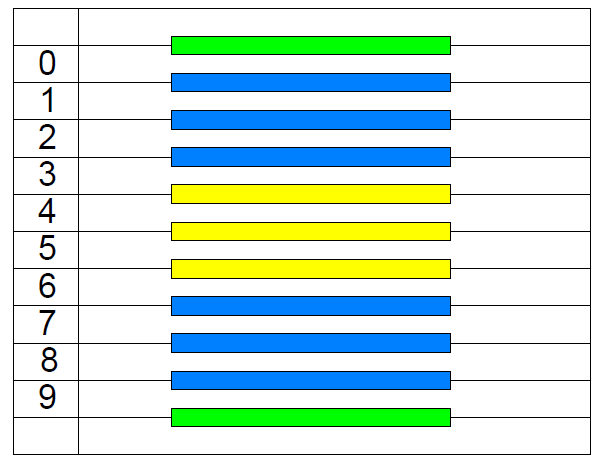
1 - места установки стоек сигнала поворота (закладные); 2 - 15-метровые отметки на дорожках; 3 - уровень воды
Рисунок 5.8 - Схема и разметка для соревнований ванны 25 м плавательного бассейна
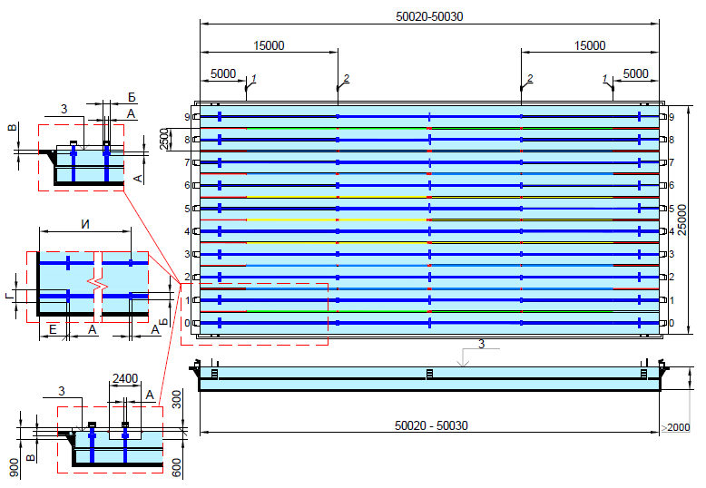
1 - трибуна фотографов; 2 - трибуна спортсменов; 3 - места технических делегатов; 4 - место главного судьи на повороте; 5 - подвижная камера; 6 - места судей на дистанции; 7 - место медицинской службы; 8 - пьедистал; 9 - места судей при участниках для заплыва на 50 м; 10 - места судей на повороте; 11 - зона награждения; 12 - линия старта для заплыва на 50 м; 13 - трибуна для тренеров; 14 - места рефери / стартер; 15 - места делегатов, официальных лиц; 16 - место ответственного за правильность результатов / секретариат; 17 - линия старта/финиша; 18 - места судей при участниках; 19 - финишная камера; 20 - граница зала ванны
Рисунок 5.9 - Спортивная зона для проведения соревнований по плаванию бассейна категории А
Высоту залов с ваннами для прыжков в воду, а также залов с универсальными ваннами (в пределах прыжковой части) следует принимать по рисунку 5.12.
В бассейнах с применением передвижной перегородки, длина ванны бассейна должна определяться с учетом толщины находящейся в ней перегородки.
Разделительные шнуры должны быть в жесткой растяжке.
На разделительных дорожках ванн длиной 25 м должна быть 15метровая отметка с обоих концов (поплавок контрастного цвета). В 50- метровых бассейнах поплавком особого цвета должна быть обозначена и 25- метровая отметка дистанции.
Стартовые тумбы, высотой над уровнем воды от 0,5 до 0,75 м, должны быть изготовлены из твердого материала (без пружинящего эффекта). Размеры нескользкой поверхности стартовой тумбы -не менее 0,5 × 0,5 м, максимальный угол наклона поверхности тумбы может быть не более 10º. Конструкцией стартовой тумбы может быть предусмотрен регулируемый упор для отталкивания ногами и поручни для хвата руками. Для старта, при плавании на спине, должны быть установлены вертикальные и горизонтальные поручни на высоте от 0,3 до 0,6 м над поверхностью воды как в горизонтальной, так и в вертикальной плоскости.
Ванна категории А для спортивного плавания должна быть оборудована системой фиксирования фальстарта.
Размеры ниши необходимо предусматривать в соответствии с размерами лестницы:
- 0,8-1×0,2-0,25 м - размер ниш для лестниц в плане;
- поручни лестницы выполняются разновысокими для удобного пользования посетителей разного роста;
- лестницы должны быть выполнены из нержавеющей стали;
- ширина лестницы - 0,6 м, расстояние между ступенями - 0,3 м;
- лестницы располагаются не ближе 3 и не далее 5 м от торцевых стенок; в случае устройства смотровых окон или выплывов они размещаются дальше от торцевой стены, чем смотровое окно или выплыв;
- ступени лестниц рекомендуется проектировать плоскими.
Бассейны для синхронного плавания
Для произвольных программ минимальная соревновательная зона 12×25 м.
Для дисциплин синхронного плавания Соло и Дуэт соревновательная зона должна быть размерами 16×25 м.
При отсутствии на стенках бассейна линий разметки для спортивного плавания, на дно ванны, продольно, должны быть нанесены контрастные линии.
1 - трибуна фотографов; 2 - платформа для судей (высота мин 0,60 м); 3 - трибуна спортсменов; 4 - место медицинской службы; 5 - зона награждения, пьедистал; 6 - места официальных представителей / судьи (высота мин 0,60 м); 7 - места хронометристов / секретариат; 8 - стартовый помост (высота мин 0,50 м / рекомендуемая 0,7 м); 9 - граница зала ванны
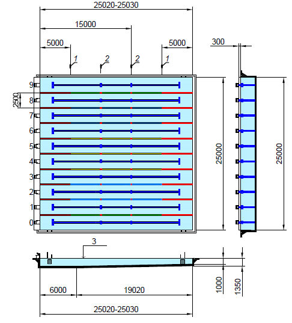
Рисунок 5.10 - Спортивная зона для проведения соревнований по синхронному плаванию бассейна категории А
Бассейны для водного поло
А
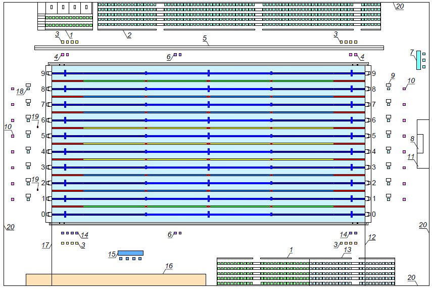
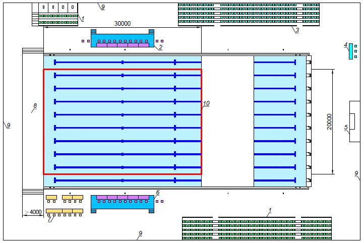
А - спортивная зона категории «А» для соревнований по водному поло;
Б - зона замены игроков;
1 - судейский стол (высота 0,70 м); 2 - корзина для мячей; 3 - судьи на линии поворота;
4 - платформа (ширина - 1 м, высота 0,70 м над уровнем воды); 5 - скамейка запасных;
- устройство для высвобождения мяча;
- граница игровой площадки (плавающая разметка);
- ворота
Рисунок 5.11 Схема размещения спортивной зоны с разметкой для соревнований по водному поло в бассейне категории А
Минимальное рекомендуемое расстояние от линии ворот до стенки бассейна - не менее 1,5 м.
В центре поля, на дне ванны, устанавливается устройство для высвобождения мяча.
Бассейны для прыжков в воду
Погрешность установки трамплинов и платформ над уровнем воды не должна быть более плюс 50 мм.
А
Б
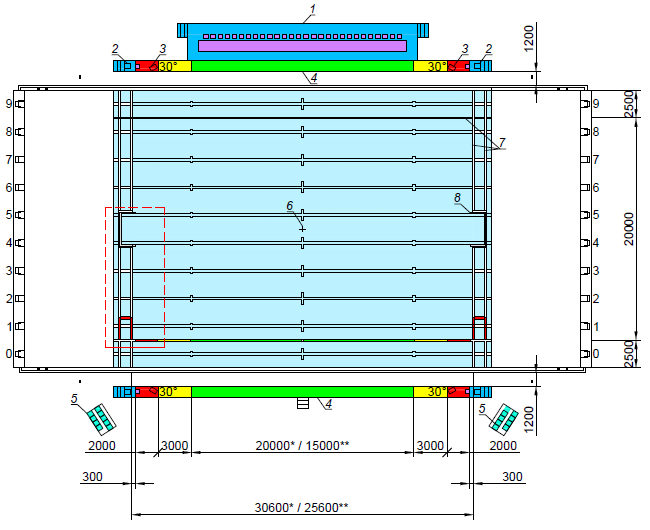
А - вид спереди; Б - вид сбоку;
1 - платформа; 2 - отвес; 3 - перекрытие; 4 - ванна для прыжков в воду;
Рисунок 5.12, лист 1 - Схема расположения и параметры трамплинов и платформ прыжкового бассейна
Параметры и размеры трамплинов и платформ для прыжков в воду
| Платформа | Платформа | Платформа | Платформа | Платформа | Платформа | Платформа | Платформа | Платформа | Платформа | Платформа | ||||||
|---|---|---|---|---|---|---|---|---|---|---|---|---|---|---|---|---|
| Параметры | 1 | метр 3 метра | метр 3 метра | 1 | 1 | метр 3 | метр 3 | метра 5 метров | метра 5 метров | 7,5 метров | 7,5 метров | 10 | 10 | метров | ||
| Длина | 4,80 | 4,80 | 4,80 | 4,80 | 5,00 | 5,00 | 5,00 | 5,00 | 6,00 | 6,00 | 6,00 | 6,00 | 6,00 | 6,00 | ||
| Обозначение | и | Ширина | 0,50 | 0,50 | 0,50 | 0,50 | 1,00 - мин 2,90 | 1,00 - мин 2,90 | 1,00 - мин 2,00 | 1,00 - мин 2,00 | 2,90 | 2,90 | 2,00 | 2,00 | 3,00 | 3,00 |
| размещение | размещение | Высота | 1,00** | 1,00** | 3,00** | 3,00** | 1,00 | 1,00 | 3,00 | 3,00 | 5,00 | 5,00 | 7,50 | 7,50 | 10,00 | 10,00 |
| Размеры в проекции | Гориз | Верт | Гориз | Верт | Гориз | Верт | Гориз | Верт | Гориз | Верт | Гориз | Верт | Гориз | Верт | ||
| От отвеса до стены | Обозначение | А-1 | А-3 | А-1пл | А-3пл | А-5 | А-7,5 | А-10 | ||||||||
| бассейна (для бетонной | Минимум | 2,22 | 2,22 | 0,75 | 1,25 | 1,25 | 1,25 | 1,50 | ||||||||
| платформы), м | Реком. | |||||||||||||||
| От отвеса до стены бассейна (для металлической конструкции), м От отвеса до края | Минимум Реком. | 1,50 | 1,50 | |||||||||||||
| А/А5/1 | А/А7,5/3,1 | А/А10/5,3,1 | ||||||||||||||
| платформы, расположенной | Обозначение Минимум | 0,75 | 0,75 | 0,75 | ||||||||||||
| непосредственно ниже, м | Реком. | 1,25 | 1,25 | 1,25 | ||||||||||||
| От отвеса до стены | Обозначение | Б-1 | Б-3 | Б-1пл | Б-3пл | Б-5 | Б-7,5 | Б-10 | ||||||||
| бассейна на каждой | Минимум | 2,50 | 3,00 | 4,00 | 4,50 | |||||||||||
| стороне, м | Реком. | 2,50 | 3,50 | 3,50 | 3,60 | 4,50 | 4,75 | 5,75 | ||||||||
| От центра до центра, м | Обозначение | В-1-1 | В-1-1 | В3-3,3-1 | В3-3,3-1 | В-1-1пл | В3-3,5-1 | В5-3,Тр1 | В7,5-Тр3,1 | В10-7,5,5,3,1 | В10-7,5,5,3,1 | |||||
| соседнего | Минимум Реком. | 2,00 | 2,20 2,60 | 1,85 2,15 | 2,20*** 2,35*** | 2,85** | 2,75*** | 3,00*** | ||||||||
| От отвеса до передней стенки | Обозначение | Г-1 | Г-3 | Г-1пл | Г-3пл | Г-5 | Г-7,5 | Г-10 | ||||||||
| бассейна, м | Минимум Реком. | 9,00 | 10,25 | 8,00 | 9,50 | 10,25 | 11,00 | 13,50 | ||||||||
| По отвесу от доски | Обозначение | Д-1 | Д-3 | Д-1пл | Д-3пл | Д-5 | Д-7,5 | Д-10 | ||||||||
| до потолка, м | Минимум Реком. | 5,00 5,00 | 5,00 5,00 | 3,25 3,50 | 3,25 3,50 | 3,25 3,50 | 3,25 3,50 | 4,00 5,00 | ||||||||
| Свободный зазор | Обозначение | Е-1 | Д-1 | Е-3 | Д-3 | Е-1пл | Д-1пл | Е-3пл | Д-3пл | Е-5 | Д-5 | Е-7,5 | Д-7,5 | Е-10 | Д-10 | |
| позади и с каждой | Минимум | 2,50 | 2,50 | 5,00 | 2,75 | 3,25 | 2,75 | 3,25 | 2,75 | 3,25 | 2,75 | 3,25 | 2,75 | 4,00 | ||
| стороны отвеса, м | Реком. | 5,00 | 3,50 | 3,50 | 3,50 | 3,50 | 5,00 | |||||||||
| Обозначение | Ж-1 | Д-1 | Ж-3 | Д-3 | Ж-1пл | Д-1пл | Ж-3пл | Д-3пл | Ж-5 | Д-5 | Ж-7,5 | Д-7,5 | Ж-10 | Д-10 | ||
| Свободный зазор впереди отвеса, м | Минимум | 3,25 | 3,25 | 3,25 | 3,25 | 4,00 | ||||||||||
| Реком. | 5,00 | 5,00 | 5,00 | 5,00 | 5,00 | 3,50 | 5,00 | 3,50 | 5,00 | 3,50 | 5,00 | 3,50 | 6,00 | 5,00 | ||
| Глубина воды по отвесу, м | Обозначение | И-1 | И-3 | И-1пл | И-3пл | И-5 | И-7,5 | И-10 | ||||||||
| Минимум Реком. | 3,40 3,50 | 3,70 3,80 | 3,20 | 3,50 3,60 | 3,70 3,80 | 4,10 4,50 | 4,50 5,00 | |||||||||
| Расстояние и | Обозначение | К-1 | Л-1 | К-3 | Л-3 | К-1пл | Л-1пл | К-3пл | Л-3пл | К-5 | Л-5 | К-7,5 | Л-7,5 | К-10 | Л-10 | |
| глубина впереди | Минимум | 3,30 | 3,60 | 3,10 | 3,40 | 6,00 | 3,60 | 8,00 | 4,00 | 4,25 | ||||||
| отвеса для всех стоек, м | Реком. | 5,00 | 3,40 Н-1 | 6,00 | 3,70 Н-3 | 3,20 | 5,50 | 3,70 Н-5 | М-7,5 | 4,40 Н-7,5 | М-10 | 4,75 Н-10 | ||||
| Минимум | 3,30 | М-3 | 3,60 | 4,50 | 3,50 | М-5 | 3,60 | 4,00 | 11,00 | |||||||
| Расстояние и | Обозначение | М-1 | М-1пл | Н-1пл | М-3пл | Н-3пл | ||||||||||
| глубина каждой | 1,50 | 2,00 | 1,40 | 3,10 | 1,80 | 3,40 | 3,00 | 3,75 | 4,50 | 4,25 | ||||||
| стороны отвеса, м | Реком. | 2,00 | 3,40 | 2,50 | 3,70 | 1,90 | 3,20 | 2,30 | 3,50 | 3,50 | 3,70 | 4,50 | 4,40 5,25 | 4,75 |
Примечания
1 Размеры В (отвес с каждой стороны бассейна) и С (отвес к соседнему подвесу) применяются к платформам установленной ширины. Если ширина платформы увеличивается, то Б и В должны увеличиться соответственно.
- 2 Расстояние между платформой 10 м и соседними (расположенными на другой высоте) в проекции должно быть не менее 0,25 м.
3 При размещении двух платформ на одной вертикальной оси - передняя кромка верхней платформы должна выступать на 0,75 м за переднюю кромку нижней.
4 Передняя кромка платформы для трамплина (трамплинов) не должна выступать за проекцию стенки ванны
30°
Рисунок 5.12, лист 2
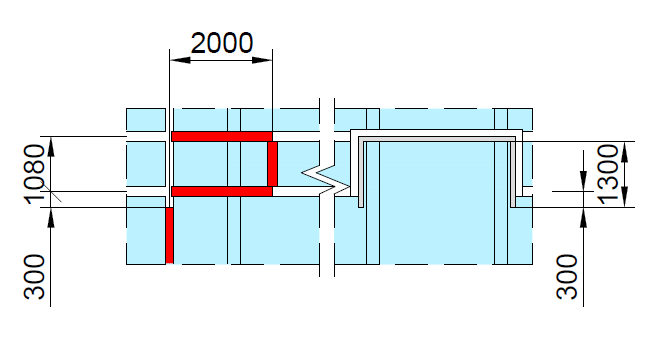
- А - параметры перил ограждения платформ;
- Б - ванна для прыжков в воду с разметкой (вид сверху);
- В - спортивная зона бассейна категории А для соревнований по прыжкам в воду;
1 - гидромассажная ванна; 2 - места для 6 судей (синхро 3м / 10 м); 3 - места для 5 судей (синхро 3м / 10 м); 4 - места для 4 судей (3м / 10м); 5 - места для 3 судей (1м); 6 - трибуна для тренеров; 7 - трибуна для спортсменов; 8 - позиции для телевидения; 9 - трибуна для фотографов; 10 - позиции для телевещания; - разметка на дне ванны контрастным
- 11 - секретариат / табло; 12 - 4 судьи (1м); 13 - 3 судьи (3м / 10м); 14 цветом (ширина полос: минимум 0,20 м, максимум 0,30 м); 15 - душ
Рисунок 5.13 Расположение спортивной зоны для соревнований по прыжкам в воду в бассейне категории А
- высота от верха платформы, поддерживающей станину, до верха трамплинной доски должна составлять 0,35 м;
- расстояние от переднего края станины до переднего края платформы должно быть не более 0,44 м (длина станины 0,741 м);
На платформе 10 м шириной менее 3 м обязательна установка ограждения. Перила должны заканчиваться на расстоянии 3 м от переднего края платформы. Допускается использование съемных секций ограждения (ближних к переднему краю) на платформе 10 м для исполнения синхронных прыжков.
Платформы должны быть с антискользящим покрытием, с учетом эксплуатации в сухом, влажном или мокром состоянии.
При расположении двух платформ непосредственно друг под другом, верхняя платформа должна выступать минимум на 0,75 м (предпочтительнее 1,25 м) за край нижней платформы.
Для безопасности пользователя, следует соблюдать следующие ограничения относительно платформ и опорных устройств трамплинов:
- собственная частота колебаний платформ - не более 10 Гц;
- собственная частота колебаний вышки - не более 3,5 Гц;
- колебание всей конструкции - не более 3,5 Гц.
Деформация переднего края платформы возникающая под воздействием нагрузки в 100 кг не должна превышать 1 мм.
На обходных дорожках ванн для прыжков в воду и универсальных ванн, в непосредственной близости к прыжковым устройствам, следует располагать душевые установки из расчета одна сетка на 10 прыгунов. Душ может располагаться в открытых кабинах или без кабин. Температура воды 36 °С-40 °С.
В специализированных ваннах для прыжков в воду для выхода из воды допускается устройство одной лестницы или ступенек, расположенных под прыжковыми устройствами по всей ширине ванны (см. рисунок 5.12, лист 1).
Минимальная ширина места для сидения принимается -0,45 м, рекомендуемая - 0,5 м.
Глубина сидения на стационарных трибунах -0,4 м. На трансформируемых трибунах ее допускается уменьшать до 0,35 м.
- вестибюля (дополнительно 0,25 м² на одно зрительское место);
- гардероба (дополнительно 0,1 м² на одно зрительское место, но не менее 10 м² );
- фойе (дополнительно 0,35 м² на одно зрительское место);
- обеденного зала, буфета (дополнительно 1,4 м² на одно зрительское место);
- дополнительных санитарных узлов, из расчета числа зрителей согласно СП 118.13330.
Обходные дорожки
Ширина обходной дорожки у торцевой стенки ванны со стартовыми тумбочками принимается не менее 3 м; ширина обходной дорожки вдоль стенок с устройствами для прыжков принимается с учетом габаритов этих устройств и обеспечения подходов к ним.
Поверхность обходной дорожки должна быть нескользкой с уклоном 0,01-0,02 в сторону трапов.
По внешнему периметру обходных дорожек открытых ванн следует предусматривать стационарное ограждение, исключающее доступ к ваннам посторонних лиц.
6Помещения раздевальных
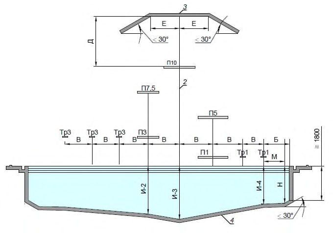
- три места в шкафах в бассейнах без зала для подготовительных занятий пловцов;
- пять мест в шкафах для переодевания в бассейнах с залом для подготовительных занятий.
- 2,1 м² - в бассейнах без залов для подготовительных занятий;
- 2,5 м² - в бассейнах с залами для подготовительных занятий; для раздевальных с числом мест 40 и более:
- 1,7 м² - в бассейнах без залов для подготовительных занятий;
- 2,1 м² - в бассейнах с залами для подготовительных занятий. для раздевальных, предназначенных для детей до 10 лет - 2,9 м² .
При душевых с числом сеток более шести предусматривается прихожая, площадь которой определяется из расчета 0,3 - 0,5 м² на одну душевую сетку. Прихожая оборудуется вешалками для полотенец и ячейками для хранения мыла и мочалок.
Д.
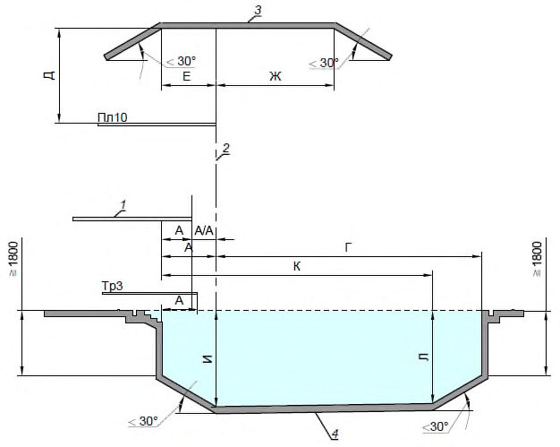
7Вспомогательные помещения
7.1Вспомогательные помещения бассейнов подразделяются
обязательные и рекомендуемые. Их состав приведен в приложении Е.
- 200% числа одновременно занимающихся в бассейне детей - с учетом бассейнов с залами для подготовительных занятий;
- 100% числа одновременно занимающихся в бассейне детей - с учетом бассейнов без залов для подготовительных занятий;
В дополнение к общей комнате инструкторов в учебных и оздоровительных бассейнах следует проектировать комнату дежурного инструктора площадью 8 м² - которая должна быть с выходом на обходную дорожку бассейна. Наличие этой комнаты не уменьшает требуемой вместимости общей комнаты инструкторов.
Помещения хлораторной и склада хлора должны быть с выходом на улицу непосредственно или через тамбур. Допускается устройство общего тамбура для выхода из обоих помещений наружу.
Не допускается располагать санитарные узлы и душевые над помещениями для приготовления дезинфицирующих и коагулирующих растворов.
8Конструкции и отделка помещений с влажным и мокрым режимами
Стыки между сборными элементами перекрытий должны быть с дополнительным слоем гидроизоляции на 100 мм в каждую сторону.
В помещениях с мокрым режимом уровень чистого пола должен быть на 30 мм ниже уровня пола других смежных помещений, поверхность пола должна быть нескользкой.
- железобетонные конструкции, покрытые кафельной плиткой, ПВХ пленкой или эластичным материалом, соответствующим требованиям Роспотребнадзора;
- металлические сварные конструкции из нержавеющей стали;
- металлические сборные конструкции ламинированные ПВХ пленкой;
- металлические сборные конструкции покрытые ПВХ пленкой.
9Естественное освещение
- 14 % - 16 % - при одностороннем боковом освещении,
- 12 % - 13 % - при двух и многостороннем боковом освещении; для залов подготовительных занятий:
- 17 % - при одностороннем боковом освещении;
- 14 % - при двух и многостороннем боковом освещении.
10Водоснабжение и канализация
Расчет водопотребления в буфетах может быть выполнен как по числу отпускаемых блюд, так и по числу моек.
Отдельно следует учитывать расходы горячей воды на проходной ножной душ с расходом 720 л/ч, температурой 30 °С -35 °С, продолжительностью работы - 30 мин в смену и мытье обходных дорожек и душевых с расходом 6 л/м и температурой 30 °С (два раза в сутки).
- 30 °С - 32 °С - для детей дошкольного возраста;
- 29 °С - 30 °С - учебных;
- 26 °С - 29 °С - оздоровительных;
- 25 °С - 28 ºС - для спортивного плавания;
- не менее (27 ±1) ºC - для синхронного плавания;
- не менее (26 ±1) ºC - для водного поло;
- не менее 26 °С - для прыжков в воду, в соответствии с СанПиН 2.1.2.1188.
- рециркуляционного (оборотного) типа;
- проточного типа;
- с периодической сменой воды.
Принцип водообмена проточного типа рекомендуется, как правило, для ванн с объемом воды не более 70 м³ , согласно ГОСТ Р 53491.1.
- не более 0,5 ч - для бассейнов детей дошкольного возраста;
- не боле 4,0 ч - для учебных бассейнов;
- не более 6,0 ч - для оздоровительных бассейнов;
- не более 8 ч - для спортивных бассейнов.
Указанное время полного водообмена не распространяется на бассейны проточного типа.
Скорость выхода воды из подающих отверстий следует принимать не более 2-3 м³ /с.
- расходомеров, показывающих количество воды, подаваемой в ванну;
- расходомеров, показывающих количество свежей водопроводной воды, поступающей в рециркуляционную систему;
- контрольных кранов для отбора проб воды:
- поступающей в систему водоподготовки бассейнов всех типов;
- до и после фильтров - в бассейнах рециркулирующего типа;
- после обеззараживания перед подачей воды в ванну.
Рекомендуется применять приборы, обеспечивающие автоматическую дозировку реагентов при разных способах водоподготовки.
ГОСТ Р 53491.1.
Для хранения воды, из переливных желобов, устанавливается бакаккумулятор (балансный резервуар). Обновление воды в бассейне осуществляется непрерывно в течение суток согласно ГОСТ Р 53491.1.
- площадь зеркала воды, м² . где F
11Отопление и вентиляция
- 0,2 м³ /с - в залах ванн бассейнов;
- 0,5 м³ /с - в залах для подготовительных занятий.
- 50 % - 65 - в залах ванн бассейнов;
- 30 % - 60 % - в залах для подготовительных занятий.
- залов ванн бассейнов;
- залов для подготовительных занятий;
- помещений административного и инженерно-технического персонала, бытовых помещений рабочих;
- хлораторных и складов хлора;
- технических помещений (насосно-фильтровальных, бойлерных, озонаторных и др.).
Пульты для включения систем вентиляции, обслуживающих хлораторную и озонаторную, должны быть установлены вне этих помещений.
Вентиляционные агрегаты необходимо размещать вне этих помещений. Управление агрегатами осуществляют от пусковых устройств, устанавливаемых у входа в помещения.
12Электроснабжение и электрические устройства
Интенсивность освещения для спортивного плавания на стартовом плоту и поворотном конце бассейна должна быть не менее 600 люкс. При проведении соревнований категории А по спортивному плаванию освещенность всего бассейна должна быть не менее 1500 люкс.
Освещенность для водного поло - не менее 600 люкс.
Освещенность при проведении соревнований категории А по водному поло и синхронному плаванию - не менее 1500 люкс.
Минимальная освещенность на уровне 1 м над поверхностью воды в прыжковых бассейнах должна быть не менее 600 люкс, при проведении соревнований категории А - не менее 1500 люкс.
Для освещения залов высотой 8 м и менее рекомендуется применять систему верхнебокового освещения с установкой светильников на боковых стенках и потолке за пределами зеркала воды. Наиболее комфортная система освещения - система отраженного света. При установке светильников на потолке зала необходимо обеспечивать угол отклонения не менее 40° в продольной и поперечной плоскостях.
При применении газоразрядных ламп управление освещением осуществляется тремя-четырьмя ступенями.
При применении мачт прожекторного освещения их располагают по продольным сторонам ванны.
- радиофикацию от радиотрансляционной сети населенного пункта;
- телефонизацию от АТС населенного пункта;
- электрочасофикацию.
7 .
13Акустика
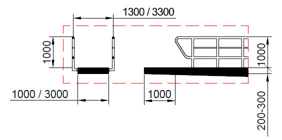
14Автоматическое и звуковое оборудование ванн бассейнов
Таблица А.1
| Виды бассейнов | Для детей дошкольного возраста | Для детей дошкольного возраста | Учебные | Учебные | Учебные | Оздоровительные | Оздоровительные |
|---|---|---|---|---|---|---|---|
| Место применения и размещения | дошкольные образовательные организации, детские медицинские учреждения | дошкольные образовательные организации, детские медицинские учреждения | общеобразовательные организации, детские санатории, лагеря отдыха, санатории и др. | общеобразовательные организации, детские санатории, лагеря отдыха, санатории и др. | общеобразовательные организации, детские санатории, лагеря отдыха, санатории и др. | места проживания и массового отдыха граждан, спортивные центры системы культурно- бытового обслуживания населения | места проживания и массового отдыха граждан, спортивные центры системы культурно- бытового обслуживания населения |
| Назначение | оздоровление и приобщение детей к воде | оздоровление и приобщение детей к воде | обучение плаванию | обучение спортивному плаванию | обучение спортивному плаванию | оздоровительное плавание | оздоровительные занятия |
| Размеры ванн, м | 3(4) ∗ ×7 | 6 ×10(12) ∗ | 10×6 | 25 ×11 (стандарт- ный) | 16 ×11 (укорочен- ный) | 25 ×15 | произвольные |
| Глубина, м | 0,6 - 0,8 | 0,6 - 0,8 | 0,7 - 0,9 | 1,2 - 1,8 | 1,2 - 1,8 | 1,2 - 1,8 | 1,0 - 1,25 |
| Расчетная площадь водной поверхности, м² , на одного человека | 3 | 3 | 4 | 4 | 4 | 5 | 5 |
Примечания
1 Значения глубины бассейна определяют уклон, который следует предусматривать по длине ванн бассейна.
2 Размеры и форма физкультурно-оздоровительных плавательных бассейнов уточняются заданием на проектирование.
АПриложение А. Назначение, размеры и расчетные показатели оздоровительных плавательных бассейнов
Приложение Б
Параметры и пропускная способность ванн спортивных бассейнов
Таблица Б.1
| Размер ванны, м | Размер ванны, м | Глубина воды в глубокой части ванны, м | Пропускная способность | |
|---|---|---|---|---|
| Назначение ванны | длина* | ширина | ванны в смену, чел | |
| Плавание | 50 25 25 | 25(21) 25(21) 16 | Исходя из уклона дна, принимаемого не менее 0,01. Глубина 1,8 м ** | 120(96) 80(64) 48 |
| Синхронное плавание | 25*** | 16 | 2,0-3,0 | 12 |
| Водное поло | Не менее 33,3 | Не менее 21 | 1,8 (минимум) | 25 (80 для других целей) |
| Прыжки в воду | 25 | 20 | 3,8-5,0 | 30 (максимум) |
- ** Рекомендуемая минимальная глубина для спортивного плавания. Для соревнований категории А глубина 2,0 м (минимум). Уклон дна к местам выпуска воды в плавательных бассейнах следует принимать не менее 0,01, но не более 0,045; допускаются уклоны в поперечном направлении.
- *** Для соревнований категории А произвольной программы требуется зона минимальными размерами 30×12м (глубина выделенной части 12×12 м - 3 м, глубина остальной части - 2,5 м).
Примечание -В скобках приведено значение меньшей ширины ванны и соответствующей ей пропускной способности.
ВПриложение В. Размеры платформы для прыжков в воду в зависимости от ее высоты
Таблица В.1
| Высота над уровнем воды, м | Ширина, м | Длина, м |
|---|---|---|
| 0,6 - 1,0 | 1,0 - 2,9 | 5 |
| 2,6 - 3,0 | 1,0 - 2,0 | 5 |
| 5,0 | 2,9 | 6,0 |
| 7,5 | 2,0 | 6,0 |
| 10,0 | 3,0 | 6,0 |
ГПриложение Г. Ширина проходов между элементами оборудования в раздевальных и душевых
Таблица Г.1
| Проходы между элементами оборудования | Размер, м, не менее |
|---|---|
| В раздевальных | В раздевальных |
| Между рядами скамей при сидении лицом друг к другу | 1,5 |
| Между рядом скамей и параллельной ему стеной или стоящим напротив рядом шкафов | 1,1 |
| Боковые проходы | 0,5 |
| Главные проходы | 1,0 |
| Между рядами шкафов для домашней одежды | 0,7 |
| В душевых Между фронтом душевых кабин и противоположной стеной | 1,3 |
| Между фронтами противоположных рядов душевых кабин | 1,5 |
ДПриложение Д. Расчетное число санитарных приборов во вспомогательных помещениях
Таблица Д.1
| Помещение, санитарные приборы | Число санитарных приборов в помещении | Примечание |
|---|---|---|
| Санитарные узлы для занимающихся | Санитарные узлы для занимающихся | Санитарные узлы для занимающихся |
| Женские | Один унитаз на 30 мест для переодевания, но не менее одного унитаза | - |
| Мужские | Один унитаз и один писсуар на 45 мест для переодевания, но не менее одного унитаза | - |
| Санитарные узлы для сотрудников, инструкторов и тренеров | Санитарные узлы для сотрудников, инструкторов и тренеров | Санитарные узлы для сотрудников, инструкторов и тренеров |
| Женские Мужские | Согласно СП 118.13330 | При числе менее 20 единовременно работающих мужчин и женщин предусматривается общий санитарный узел на один унитаз |
| Прочие помещения и оборудование | Прочие помещения и оборудование | Прочие помещения и оборудование |
| Раздевальные для занимающихся | Один умывальник на 30 мест для переодевания в раздевальной, но не менее одного | Допускается размещать при уборных |
| Комнаты инструкторского и тренерского состава, бытовые помещения для рабочих, помещения медсестры лаборатории анализа воды | По одному умывальнику на каждое помещение | - |
| Раковины в тамбурах хлораторных и складах хлора | Одна раковина в тамбуре | - |
| Мойки в помещениях уборочного инвентаря | Одна мойка на помещение | - |
ЕПриложение Е. Набор помещений бассейнов по критериям необходимости
Таблица Е.1
| Вид бассейна | Вид бассейна | Вид бассейна | ||
|---|---|---|---|---|
| Наименование помещения | Наименование помещения | для детей дошкольного возраста | учебные | оздоровительные |
| 1 | Выходная зона | Выходная зона | Выходная зона | Выходная зона |
| 1.1 | Вестибюль | - | ○ | ● |
| 1.2 | Гардеробная верхней одежды | - | ○ | ● |
| 1.3 | Помещение охраны с видеонаблюдением | - | - | ● |
| 1.4 | Уборные | ● | ● | ● |
| 1.5 | Игровая для детей | - | - | ○ |
| 2 | Контрольная зона | Контрольная зона | Контрольная зона | Контрольная зона |
| 2.1 | Касса | - | - | ● |
| 2.2 | Регистратура | - | - | ● |
| 2.3 | Выдача купальных принадлежностей | - | - | ○ |
| 3 | Зона раздевальных | Зона раздевальных | Зона раздевальных | Зона раздевальных |
| 3.1 | Раздевальные | ● | ● | ● |
| 3.2 | Гардеробная домашней одежды | - | ● | ● |
| 3.3 | Постирочная для купальных принадлежностей | - | - | ○ |
| 3.4 | Комната для сушки волос | - | - | ○ |
| 4 | Санитарная зона | Санитарная зона | Санитарная зона | Санитарная зона |
| 4.1 | Душевые | ● | ● | ● |
| 4.2 | Кладовая моющих средств | ● | ● | ● |
| 4.3 | Уборная | ● | ● | ● |
Продолжение таблицы Е.1
| Вид бассейна | Вид бассейна | Вид бассейна | ||
|---|---|---|---|---|
| Наименование помещения | Наименование помещения | для детей дошкольного возраста | учебные | оздоровительные |
| 5 | Зона плавания | Зона плавания | Зона плавания | Зона плавания |
| 5.1 | Зал с ванными бассейна | ● | ● | ● |
| 5.2 | Душевая с холодной водой | - | - | ● |
| 6 | Зона помещений персонала | Зона помещений персонала | Зона помещений персонала | Зона помещений персонала |
| 6.1 | Комната первой медицинской помощи (дежурной медсестры) | ○ | ● | ● |
| 6.2 | Комната дежурного инструктора | - | - | - |
| 6.3 | Методический кабинет | ○ | ● | - |
| 6.4 | Тренерская (помещение инструкторов) | ● | ● | ● |
| 6.5 | Помещение персонала обслуживающего бассейна | ● | ● | ● |
| 6.6 | Гардеробная для персонала | ● | ● | ● |
| 6.7 | Душевая | ● | ● | ● |
| 6.8 | Уборная | ● | ● | ● |
| 7 | Зона дополнительных помещений | Зона дополнительных помещений | Зона дополнительных помещений | Зона дополнительных помещений |
| 7.1 | Сауна | - | - | ○ |
| 7.2 | Солярий | - | - | ○ |
| 7.3 | Буфет | - | - | ● |
| 7.4 | Зал подготовительных занятий | ● | ● | ● |
| 7.5 | Радиоузел | - | ● | ● |
| 7.6 | Массажный кабинет | - | - | ○ |
Окончание таблицы Е.1
| Вид бассейна | Вид бассейна | Вид бассейна | |
|---|---|---|---|
| Наименование помещения | для детей дошкольного возраста | учебные | оздоровительные |
| 8 | Зона вспомогательных помещений | Зона вспомогательных помещений | Зона вспомогательных помещений |
| 8.1 Помещения для отдыха персонала | - | ○ | ● |
| 8.2 Кладовая уборочного инвентаря и | ● | ● | ● |
| 8.3 Мастерская | ● | ● | ● |
| 8.4 Химическая лаборатория | - | ○ | ○ |
| 8.5 Помещения для хранения реагентов | - | ● | ● |
Обозначения:
«○» - необходимость помещений устанавливается заданием на проектирование;
«●» - необходимость помещений предусматривается как правило;
«-» - не предусматривается.
Примечания - Состав технических помещений в зависимости от конкретных решений инженерных систем зданий бассейнов, принимается согласно действующим нормативным документам.
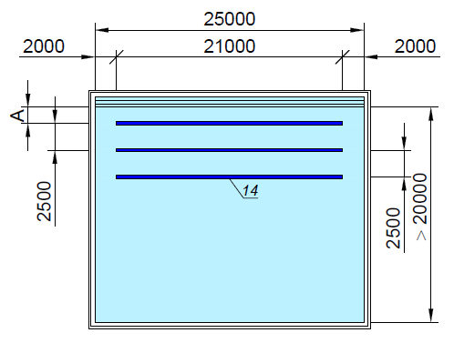
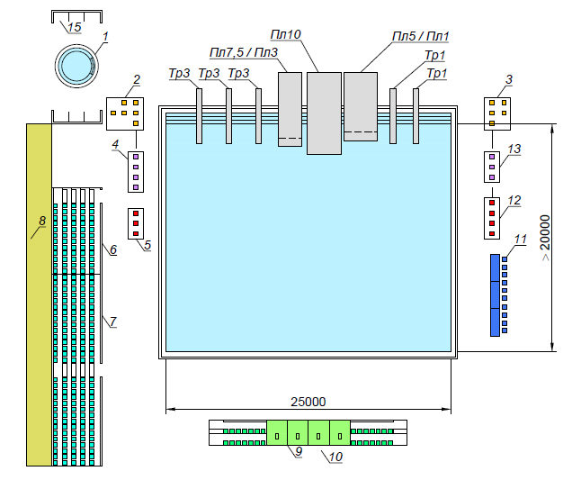
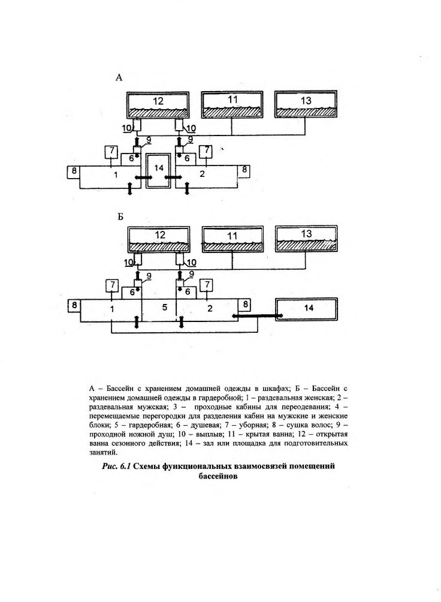
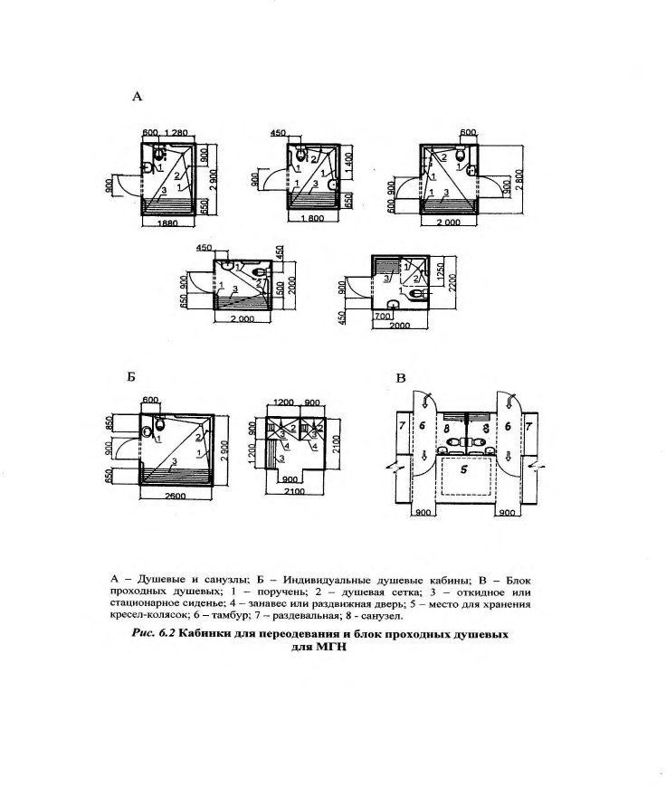
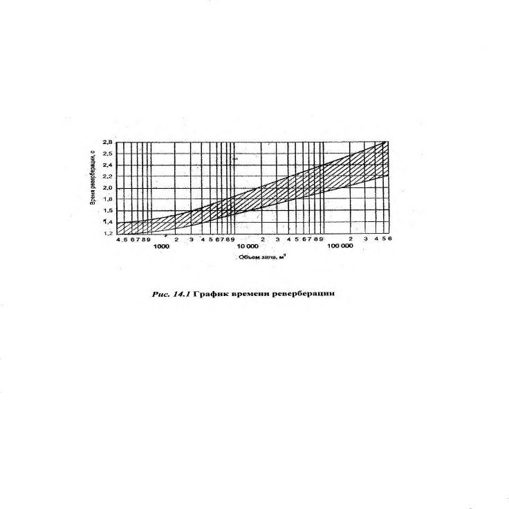
ЖПриложение Ж. Состав и площади медико-восстановительного центра
В составе помещений бассейнов оздоровительного назначения по заданию на проектирование может предусматриваться медико-восстановительный центр.
Помещения медико-восстановительного центра располагают обособленной группой, удаленной от вентиляционных камер, насосных и других источников вибрации и шума.
Все процедурные кабинеты должны быть с естественным освещением. Ширина коридоров медико-восстановительного центра должна быть не менее 2 м.
Помещения медико-восстановительного центра рекомендуется объединять в два блока:
I - водолечебные помещения и баня сухого жара с контрастной ванной и душевой;
II - кабинеты электросветолечения, тестов с физической нагрузкой, процедурная.
Кабинет врача и массажная могут примыкать к любому из этих блоков.
Помещения блока водных процедур должны быть непроходными и располагаться по возможности дальше от наружного входа в здание. Кабинет электросветолечения должен быть отделен от водолечебных помещений «сухим» помещением.
Кабинет электросветолечения оборудуется кабинами размерами 2,2×1,8-2 м с перегородками высотой 2 м. В каждой кабине устанавливается кушетка с подъемным изголовьем и устройством для местного освещения и один стационарный физиотерапевтический аппарат. Кабинет должен быть оборудован самостоятельным контуром заземления.
Блок водных процедур рекомендуется размещать на первом этаже. Полы помещений блока должны быть с уклоном не менее 0,01 в сторону трапа. В душевом зале устанавливают душевую кабину и питаемые от нее душевые установки для циркулярного, дождевого, восходящего и струевого душей. Душевую кабину устанавливают так, чтобы при проведении струевого душа пациент находился от нее на расстоянии 3,5-4,0 м и на него падал прямой дневной свет. На высоте 1,2-1,5 м к стене прикрепляется металлический поручень. Душевые установки оборудуются в кабинах размерами в плане не менее 1х1 м, разделяемых перегородками высотой 2 м, не доходящими до пола на 10-15 см. Душевая кабины должны располагаться таким образом, чтобы медицинский персонал мог видеть пациентов.
Душевая кабина должна быть с подводкой горячей и холодной воды, при этом давление холодной и горячей воды должно быть одинаковым (2-2,5 атм.). Для поддержания постоянного давления в насосной необходимо предусматривать емкости для холодной и горячей воды объемом не менее 3 м³ каждая.
Помещение подводного душа-массажа должно быть шириной не менее 3,5 м. К ванне размерами 2,33×1,85×0,92 ( h ) должен быть обеспечен подход с трех сторон. Форсунки для душа-массажа располагаются в торце ванны.
Состав и площади помещений центра
Таблица Ж.1
| Наименование помещений | Значение площади, м² |
|---|---|
| Кабинет врача (заведующего центром) | 12-14 |
| Кабинет электро- и светолечения: | |
| - семь кабин по одной кушетке в каждой | 42 |
| - помещение для обработки прокладок | 8 |
| Душевой зал: | |
| - кафедра на 5 душевых установок | 25 |
| - раздевальная при зале | 10 |
| - насосная кафедра | 18 |
| Подводный душ-массаж: | |
| - комната с ванной | 18 |
| - кабина для раздевания | 2 |
| Кабинет для проведения тестов с физической нагрузкой (велоэргометрия, спироэргометрия и др.) | 20 |
| Процедурная для инъекций | 12 |
| Комната для отдыха (в креслах) | 12 |
| Кладовая предметов уборки и грязного белья | 4 |
| Комната персонала | 12-15 |
| Санитарный узел: | 6 |
| - женский (два унитаза с умывальником в шлюзе) | 6 |
ИПриложение И. Температура воздуха и кратность воздухообмена в помещениях бассейнов
Таблица И.1
| Расчетная температура | Кратность обмена воздуха в 1 ч | Кратность обмена воздуха в 1 ч | |
|---|---|---|---|
| Наименование помещения | воздуха, °С | приток | вытяжка |
| 1 Залы ванн бассейнов | На 1 °С - 2 °С выше температуры воды в ванне | По расчету, но не менее 80 м³ /ч наружного воздуха на одного занимающегося и не менее 20 м³ /ч на одного зрителя | По расчету, но не менее 80 м³ /ч наружного воздуха на одного занимающегося и не менее 20 м³ /ч на одного зрителя |
| 2 Залы для подготовительных занятий | 18 | По расчету, но не менее 80 м³ /ч на одного занимающегося | По расчету, но не менее 80 м³ /ч на одного занимающегося |
| 3 Вестибюли для занимающихся | 20 | 2 | - |
| 4 Гардеробная верхней одежды для занимающихся и зрителей (обособленная от вестибюля) | 16 | - | 2 |
| 5 Раздевальные | 25 | Аналогично душевых | 2 (из душевых) |
БИБЛИОГРАФИЯ
[1] Федеральный закон от 22 июля 2008 г. № 123-ФЗ «Технический регламент о требованиях пожарной безопасности»
[2] Федеральный закон от 23 ноября 2009 г. № 261-ФЗ «Об энергосбережении и о повышении энергетической эффективности и о внесении изменений в отдельные законодательные акты Российской Федерации»
[3] Федеральный закон от 30 декабря 2009 г. № 384-ФЗ «Технический регламент о безопасности зданий и сооружений»
[4] Приказ Министерства спорта Российской Федерации от 25 февраля 2016 г. № 172 «Об утверждении классификатор объектов спорта»
[5] СП 31-110-2003 Проектирование и монтаж электроустановок жилых и общественных зданий
[6] Правила устройства электроустановок ПУЭ
[7] СО 153-34.21.122-2003 Инструкция по устройству молниезащиты зданий, сооружений и промышленных коммуникаций
[8] РД 78.35.003-2002 Инженерно-техническая укрепленность. Технические средства охраны. Требования и нормы проектирования по защите объектов от преступных посягательств
[9] Проектирование бассейнов (Справочное пособие к СНиП 2.08.02-89). - М.: Стройиздат, 1991